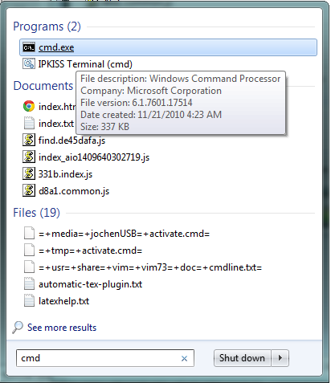
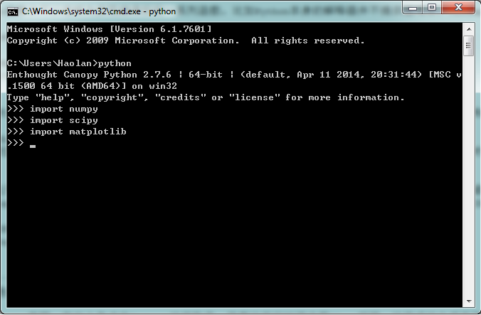

在前章稍微介绍了一下Python的相关知识，为了使读者在组里尽快上手，这里稍微介绍一下Python的安装方式和一些常见的问题。
在介绍如何安装Python之前，这里对Python涉及的一些概念做一个最简单的介绍。
Python的模块可以理解为实现编译好的一系列函数。比如Python本身的解释器并不提供圆周率，而Numpy模块提供了此包，如果在解释器中输入下面的指令就可以调用出圆周率
import numpy
print numpy.pi
推荐大家通过Enthought Canopy安装。
首先进入Canopy官网，在右上角点击Sign up注册账号，推荐注册的时候选用UGent邮箱。注册成功之后在依次点击Product -> Get Canopy -> For Academics -> Request your license。通过验证之后就可以下载了。安装过程中会询问各类设定，建议对初学者直接点确定选择默认值。
安装成功之后可以检验一下结果，首先打开cmd
然后输入python，此后按照图示输入
import numpy import scipy import matplotlib
如果看到以Enthought开头的一串提示符且输入上面三行命令的时候没有报错。则已经安装成功了。
此窗口也即是本节前面提到的python的解释器。除了最常见的python这个解释器之外，在cmd输入ipython会启用更加友好交互界面。
除了交互式界面一条一条输入命令之外之外，在cmd下执行python filename也可以执行python程序。可以下载 例程 作尝试。在此文件目录下执行 [1] python trial.py则会弹出一个显示正弦函数图像的窗口。作为参考，下面给出此程序
import numpy as np #导入Numpy库，负责数值处理
import matplotlib.pyplot as plt #导入pyplot模块，负责绘图
x = np.linspace(0,10,100)
y = np.sin(x)
plt.plot(x,y,'-o')
plt.show()
| [1] | cmd闪烁的光标前显示的就是当前工作目录。当前工作目录必须要和下载的trial.py文件所在文件夹相同才能执行成功 |